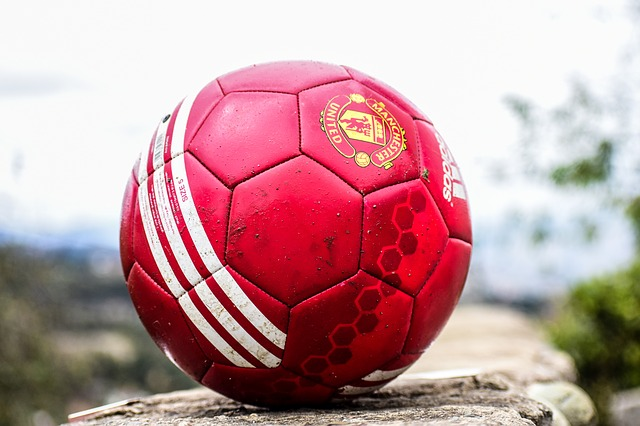

I'm a big fan of football. My favourite team, since I was a child is Manchester United. I'm also playing footabla when i've got a time.

My second big hobby is cooking. I'm always trying to cook something new, but unfotunately sometimes it's going so wrong...
I'm also trying to care about myself. Of course I'm not a bodybuilder but I'm doing some excercises to stay in great condition